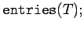

Inhalt Index DeskTop Bronstein

 Computeralgebrasysteme Maple Tabellen- und feldartige Strukturen, Vektoren und Matrizen
Computeralgebrasysteme Maple Tabellen- und feldartige Strukturen, Vektoren und Matrizen


Maple besitzt zur Konstruktion tabellen- und feldartiger Strukturen die Befehle und . Mit
| (20.46) |
erzeugt Maple eine tabellenartige Struktur, in der ifc eine Indexfunktion ist und liste eine Liste von Ausdrücken, die Gleichungen als Elemente enthält. In diesem Fall benutzt Maple die linken Seiten der Gleichungen als Indicees der Tabelleneinträge und die rechten Seiten als die jeweiligen Tabelleneinträge. Enthält die Liste nur Elemente, so nimmt Maple die natürliche Indizierung der Tabelleneinträge, beginnend mit der 1, an.
| Beispiel |
 |
Ein erneuter Aufruf von T oder R liefert nur die Symbole T oder R zurück. Erst mit oder auch gibt Maple die Tabelle zurück; beim Aufruf erhält man die Komponenten der Tabelle in der Form einer Liste der Gleichungen für die Tabellenwerte. Hieran erkennt man, daß das Evaluierungsprinzip für diese Strukturen von der Regel abweicht. In der Regel evaluiert Maple einen Ausdruck bis zum Ende, d.h. bis keine weiteren Umformungen mehr möglich sind. Im gegebenen Fall wird die Definition zwar zur Kenntnis genommen, jedoch die weitere Auswertung unterdrückt, bis sie mit der speziellen Anweisung  ausdrücklich gefordert wird.
ausdrücklich gefordert wird.
Eine Tabelle kann implizit durch Wertezuweisung an einen indizierten Namen erzeugt werden:
| Beispiel |
|
|
Mit dem Befehl erzeugt man eine leere Tabelle . Zugriff auf die Werte einer Tabelle erhält man durch
| Beispiel |
|
|
Die Indizes von T erhält man als Folge mit dem Befehl , eine Folge der Glieder mit .
| Beispiel |
|
Für die obigen Beispiele gilt |
Mit dem Befehl
| (20.47) |
lassen sich spezielle Tabellen erzeugen, die mehrdimensional sein können und ganzzahlige Laufbereiche für jede Dimension besitzen. ifc ist wiederum eine Indexfunktion, ber bestimmt die Dimension des Arrays (Anzahl der angegebenen Bereiche), list kann eine Liste von Gleichungen, eine Liste von Werten oder eine verschachtelte Liste von Listen sein. Wird ber nicht angegeben, so wird die Dimension aus den Einträgen von list entnommen.